コードを書き始める前に、まずはチェスのルールを押さえておきましょう。エンジンを作るということは、ルールをプログラムに「全部」教えるということです。人間なら「なんとなく」でわかっていることも、プログラムにはひとつ残らず書かなければいけません。
champierre さんは、チェスはどのくらい指しますか？
２年くらい、chess.com のレーティングは 900 - 1000 の間をいったりきたり。ルールはひととおり把握しています。
ちょうどいいです。「指せる」ことと「プログラムに説明できる」ことの間には、意外と大きな差があります。この章では、知っているはずのルールを、エンジンを作る側の目でもう一度見直していきましょう。まだルールを知らない読者のみなさんは、ここで一緒に覚えてしまってください。
チェスでは、強さをレーティングという数字で表します。勝てば上がり、負ければ下がります。強い相手に勝つと大きく上がる仕組みです。オンライン対局サイトの chess.com では、始めたばかりの人はだいたい数百点台で、1000 点前後あればルールも定跡の初歩もわかっている初級者です。ちなみに、人間の世界チャンピオンは 2800 点くらい。Stockfish はそれよりはるかに上で、3500 点を超えると言われています。
チェスは 8×8 = 64 マスの盤で、白と黒の 2 人が交互に駒を動かすゲームです。白が先手です。最初の配置は図 1.1 のようになります。
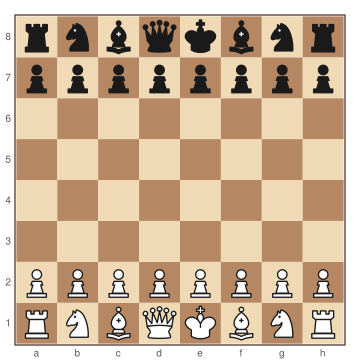
駒は 6 種類あります。
| 駒 | 英語 | 記号 | 1 人あたりの数 |
|---|---|---|---|
| キング | King | K | 1 |
| クイーン | Queen | Q | 1 |
| ルーク | Rook | R | 2 |
| ビショップ | Bishop | B | 2 |
| ナイト | Knight | N | 2 |
| ポーン | Pawn | P | 8 |
記号はこのあと何度も出てきます。ナイトだけ K ではなく N なのは、キングと区別するためです。
64 のマスには名前が付いています。横の列（左から a〜h）をファイル、縦の段（手前から 1〜8）をランクと呼び、「ファイル＋ランク」でマスを表します。たとえば図 1.2 で色を付けたマスは e4 です。
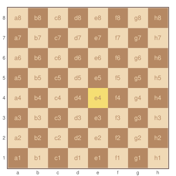
このマスの名前は、あとでプログラムの中でも大活躍します。a1 を 0 番、b1 を 1 番……h8 を 63 番と、0〜63 の番号に置き換えて扱うことになります。覚えておいてください。
ルークは縦と横に、何マスでも進めます。
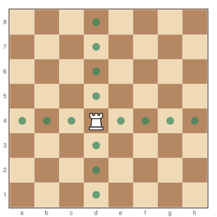
ビショップは斜めに、何マスでも進めます。斜めにしか動けないので、白いマスにいるビショップは一生白いマスにしか行けません。
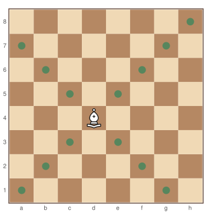
クイーンは縦・横・斜めの 8 方向に、何マスでも進めます。ルークとビショップを合わせた動きで、いちばん強い駒です。
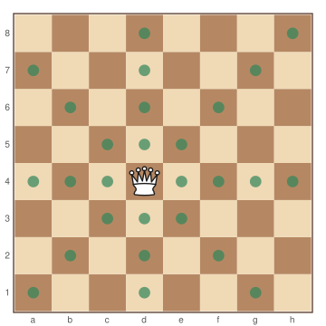
キングは 8 方向に 1 マスだけ動けます。キングを取られたら（正確には、取られるのが避けられなくなったら）負けです。
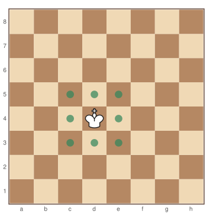
ナイトは「縦に 2・横に 1」または「縦に 1・横に 2」の L 字の位置に移動します。ナイトだけは途中の駒を跳び越せます。
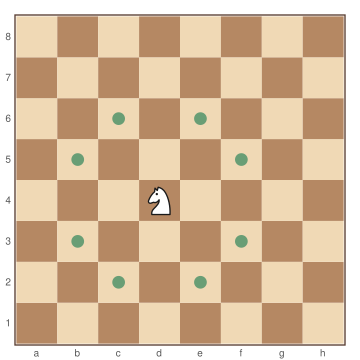
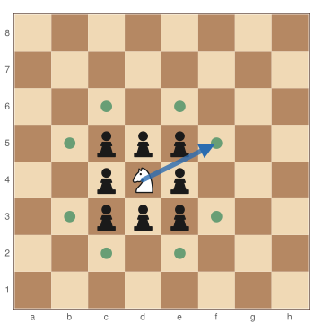
ポーンはいちばん変わった駒です。
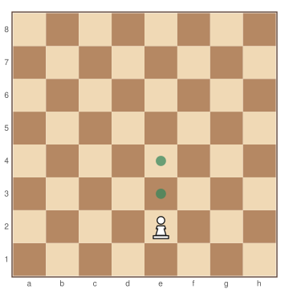
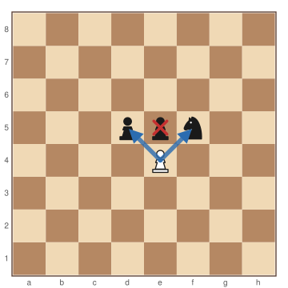
ナイト以外の駒は、途中に駒があるとそれより先には進めません。相手の駒ならそのマスに入って取ることができ、自分の駒ならその手前で止まります。
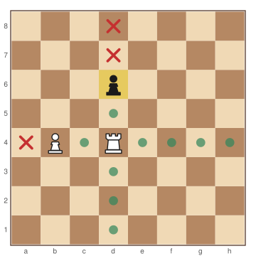
いま見た「どこまで進めるか」は、エンジンを作るときの最初の山場です。ナイトやキングのように決まった場所に跳ぶ駒と、ルークやビショップのように「ぶつかるまで滑っていく」駒では、プログラムの書き方がまったく変わります。第 5 章と第 6 章で、この違いにじっくり取り組みます。
ここで問題です。局面の写真が 1 枚だけあるとします。わかるのは駒の配置と手番だけ。この写真だけでは「その手が指せるかどうか」を判断できないルールがあります。どれだと思いますか？
アンパッサン
正解です！ まずはアンパッサンから見ていきましょう。
ポーンは最初の位置からだけ 2 マス進めます。このとき、2 マス進んだポーンのすぐ隣に相手のポーンがいると、相手はそのポーンを「1 マスしか進まなかったもの」とみなして、斜め前に進みながら取ることができます。これがアンパッサン（en passant、フランス語で「通りがけに」）です。
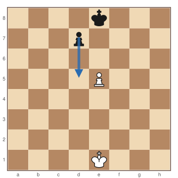
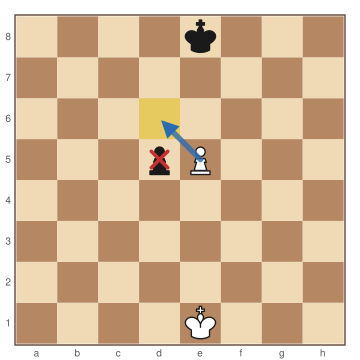
ポーンの駒取りなのに、取られる駒のマスと、取った駒が移動するマスが違う。チェスの中でこうなるのはアンパッサンだけです。エンジンを作るときは、ここがバグの温床になります。
さらに、アンパッサンで取れるのは相手が 2 マス進んだ直後の 1 手だけです。その 1 手で取らなければ、もう取れなくなります。
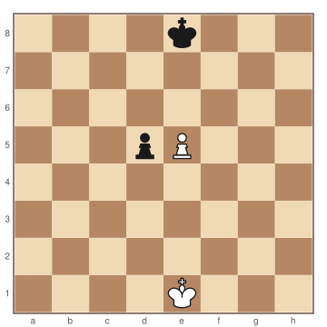
図 1.11 は図 1.10(b) とまったく同じ配置です。でも、黒のポーンがいま d7 から 2 マス進んできたのか、ずっと前から d5 にいたのかは、写真からはわかりません。前者ならアンパッサンできますが、後者ならできません。
つまりプログラムは、駒の配置とは別に「直前にポーンが 2 マス進んだかどうか」、もっと言えば「アンパッサンで移動できるマスはどこか（この例なら d6）」を覚えておく必要があります。これが盤面データの設計にかかわってきます。
キャスリング、プロモーション。
チェック、チェックメイト、ステイルメイト、その他の引き分け。
代数式記譜法（SAN）と、エンジンが使う UCI 形式の違い。